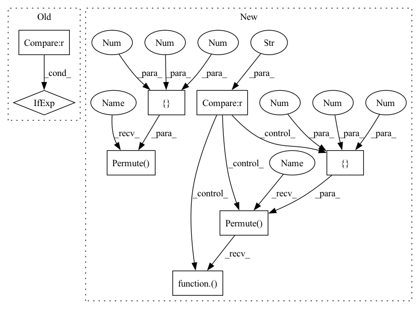

Pattern ID :25328
Before Change
block_name = stack_name + "block{}_".format(block_id + 1)
block_drop_rate = drop_connect_rate * global_block_id / total_blocks
mlp_ratio = cur_mlp_ratios[block_id] if isinstance(cur_mlp_ratios, (list, tuple)) else cur_mlp_ratios
is_attn_block = True if block_id > num_block - cur_num_attn_blocks - 1 else False
nn = meta_block(nn, is_attn_block, mlp_ratio=mlp_ratio, layer_scale=layer_scale, drop_rate=block_drop_rate, activation=activation, name=block_name)
global_block_id += 1
After Change
block_drop_rate = drop_connect_rate * global_block_id / total_blocks
mlp_ratio = cur_mlp_ratios[block_id] if isinstance(cur_mlp_ratios, (list, tuple)) else cur_mlp_ratios
if block_id >= attn_block_start_id:
nn = layers.Permute([2, 3, 1])( nn) if block_id == attn_block_start_id and image_data_format() == "channels_first" else nn
nn = attn_block(nn, mlp_ratio=mlp_ratio, layer_scale=layer_scale, drop_rate=block_drop_rate, activation=activation, name=block_name)
nn = layers.Permute([3 , 1 , 2 ]) (nn) if block_id == num_block - 1 and image_data_format() == "channels_first" else nn
else:
nn = conv_block(nn, mlp_ratio=mlp_ratio, layer_scale=layer_scale, drop_rate=block_drop_rate, activation=activation, name=block_name)
In pattern: SUPERPATTERN
Frequency: 3
Non-data size: 8
Instances Fragment ID: 77537087
Project Name: leondgarse/keras_cv_attention_models
Commit Name: e05e233f369a1d58f912872b1581a80d15cacc3f
Time: 2023-02-07
Author: leondgarse@gmail.com
File Name: keras_cv_attention_models/efficientformer/efficientformer.py
M Class Name: AnonimousClass
N Class Name: AnonimousClass
M Method Name: EfficientFormer(17)
N Method Name: EfficientFormer(17)
M Parent Class:
N Parent Class:
M File Name: keras_cv_attention_models/efficientformer/efficientformer.py
N File Name: keras_cv_attention_models/efficientformer/efficientformer.py
M Start Line: 68
M End Line: 110
N Start Line: 71
N End Line: 120
Before Change
attn = multi_head_self_attention_channel(attn, num_heads, qkv_bias=True, out_bias=True, name=name + "channel_attn_")
else:
attn = window_attention(attn, window_size, num_heads, name=name + "attn_")
attn = ChannelAffine(use_bias=False, weight_init_value=layer_scale, name=name + "1_gamma")(attn) if layer_scale >= 0 else attn
attn = drop_block(attn, drop_rate=drop_rate, name=name + "attn_")
// print(f"{pre_attn.shape = }, {attn.shape = }, {inputs.shape = }")
attn_out = keras.layers.Add(name=name + "attn_out")([pre_attn, attn])After Change
input_channel = inputs.shape[-1 if backend.image_data_format() == "channels_last" else 1]
pre_attn = conv_positional_encoding(inputs, 3, use_norm=False, activation=None, name=name + "pre_attn_cpe_")
attn = pre_attn if backend.image_data_format() == "channels_last" else layers.Permute([2, 3, 1])( pre_attn)
attn = layer_norm(attn, axis=-1, name=name + "attn_")
if use_channel_attn:
attn = multi_head_self_attention_channel(attn, num_heads, qkv_bias=True, out_bias=True, name=name + "channel_attn_")
else:
attn = window_attention(attn, window_size, num_heads, name=name + "attn_")
attn = attn if backend.image_data_format() == "channels_last" else layers.Permute([3, 1, 2])(attn)
// print(f"{pre_attn.shape = }, {attn.shape = }, {inputs.shape = }")
attn_out = add_with_layer_scale_and_drop_block(pre_attn, attn, layer_scale=layer_scale, drop_rate=drop_rate, name=name + "1_")
pre_ffn = conv_positional_encoding(attn_out, 3, use_norm=False, activation=None, name=name + "pre_ffn_cpe_")
mlp = pre_ffn if backend.image_data_format() == "channels_last" else layers.Permute([2 , 3 , 1 ]) (pre_ffn)
mlp = layer_norm(mlp, axis=-1, name=name + "mlp_")
mlp = mlp_block(mlp, int(input_channel * mlp_ratio), drop_rate=mlp_drop_rate, use_conv=False, activation="gelu", name=name + "mlp_")
mlp = mlp if backend.image_data_format() == "channels_last" else layers.Permute([3, 1, 2])(mlp) Fragment ID: 77537071
Project Name: leondgarse/keras_cv_attention_models
Commit Name: 3e9ba29ee6ea38d6190199b74812538fc0614c47
Time: 2023-02-08
Author: leondgarse@gmail.com
File Name: keras_cv_attention_models/davit/davit.py
M Class Name: AnonimousClass
N Class Name: AnonimousClass
M Method Name: davit_block(10)
N Method Name: davit_block(10)
M Parent Class:
N Parent Class:
M File Name: keras_cv_attention_models/davit/davit.py
N File Name: keras_cv_attention_models/davit/davit.py
M Start Line: 142
M End Line: 160
N Start Line: 148
N End Line: 166
Before Change
block_name = stack_name + "block{}_".format(block_id + 1)
block_drop_rate = drop_connect_rate * global_block_id / total_blocks
mlp_ratio = cur_mlp_ratios[block_id] if isinstance(cur_mlp_ratios, (list, tuple)) else cur_mlp_ratios
is_attn_block = True if block_id > num_block - cur_num_attn_blocks - 1 else False
nn = meta_block(nn, is_attn_block, mlp_ratio=mlp_ratio, layer_scale=layer_scale, drop_rate=block_drop_rate, activation=activation, name=block_name)
global_block_id += 1
After Change
block_drop_rate = drop_connect_rate * global_block_id / total_blocks
mlp_ratio = cur_mlp_ratios[block_id] if isinstance(cur_mlp_ratios, (list, tuple)) else cur_mlp_ratios
if block_id >= attn_block_start_id:
nn = layers.Permute([2 , 3 , 1 ]) (nn) if block_id == attn_block_start_id and image_data_format() == "channels_first" else nn
nn = attn_block(nn, mlp_ratio=mlp_ratio, layer_scale=layer_scale, drop_rate=block_drop_rate, activation=activation, name=block_name)
nn = layers.Permute([3, 1, 2])( nn) if block_id == num_block - 1 and image_data_format() == "channels_first" else nn
else:
nn = conv_block(nn, mlp_ratio=mlp_ratio, layer_scale=layer_scale, drop_rate=block_drop_rate, activation=activation, name=block_name)
Fragment ID: 77537081
Project Name: leondgarse/keras_cv_attention_models
Commit Name: e05e233f369a1d58f912872b1581a80d15cacc3f
Time: 2023-02-07
Author: leondgarse@gmail.com
File Name: keras_cv_attention_models/efficientformer/efficientformer.py
M Class Name: AnonimousClass
N Class Name: AnonimousClass
M Method Name: EfficientFormer(17)
N Method Name: EfficientFormer(17)
M Parent Class:
N Parent Class:
M File Name: keras_cv_attention_models/efficientformer/efficientformer.py
N File Name: keras_cv_attention_models/efficientformer/efficientformer.py
M Start Line: 68
M End Line: 110
N Start Line: 71
N End Line: 120
Before Change
def mhsa_with_multi_head_relative_position_embedding(
inputs, num_heads=4, key_dim=0, global_query=None, out_shape=None, out_weight=True, qkv_bias=False, out_bias=False, attn_dropout=0, name=None
):
channel_axis = -1 if image_data_format() == "channels_last" else 1
input_channel = inputs.shape[channel_axis]
height, width = inputs.shape[1:-1] if image_data_format() == "channels_last" else inputs.shape[2:]
After Change
// Permute for conv if given data_format not matching actual image_data_format
if image_data_format() == "channels_last" and data_format == "channels_first":
inputs = layers.Permute([2 , 3 , 1 ]) (inputs)
elif image_data_format() == "channels_first" and data_format == "channels_last" :
inputs = layers.Permute([3, 1, 2])( inputs)
conv_channel_axis = -1 if image_data_format() == "channels_last" else 1
if global_query is not None:
// kv = layers.Dense(qk_out * 2, use_bias=qkv_bias, name=name and name + "kv")(inputs) // For GCViT weights Fragment ID: 77537078
Project Name: leondgarse/keras_cv_attention_models
Commit Name: 2ba27b0132168f3590dd4b3bead9edc15a70ba7d
Time: 2023-02-11
Author: leondgarse@gmail.com
File Name: keras_cv_attention_models/coatnet/coatnet.py
M Class Name: AnonimousClass
N Class Name: AnonimousClass
M Method Name: mhsa_with_multi_head_relative_position_embedding(11)
N Method Name: mhsa_with_multi_head_relative_position_embedding(10)
M Parent Class:
N Parent Class:
M File Name: keras_cv_attention_models/coatnet/coatnet.py
N File Name: keras_cv_attention_models/coatnet/coatnet.py
M Start Line: 25
M End Line: 57
N Start Line: 32
N End Line: 74